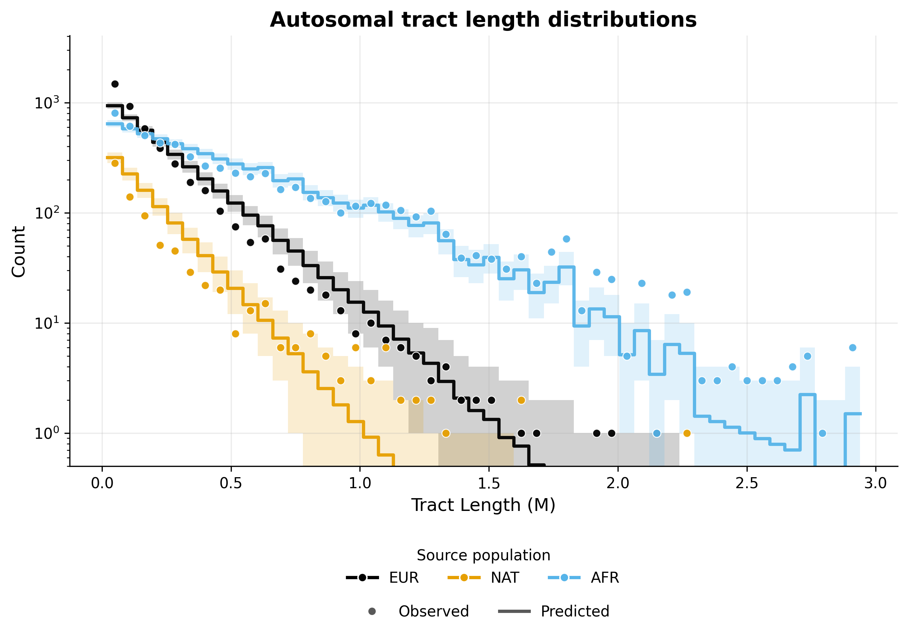
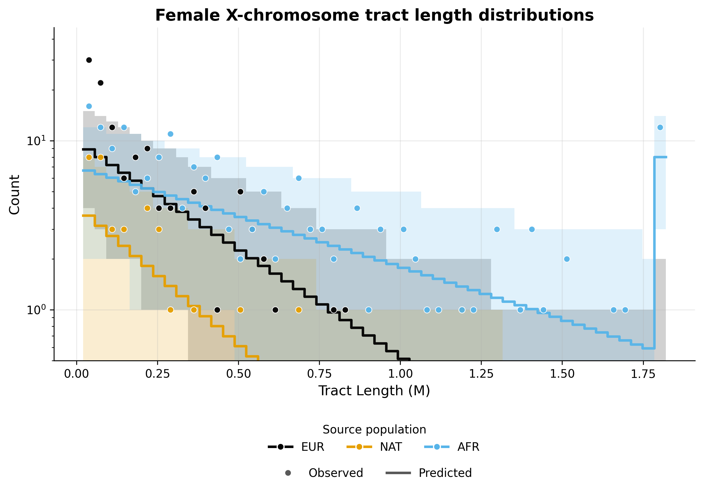
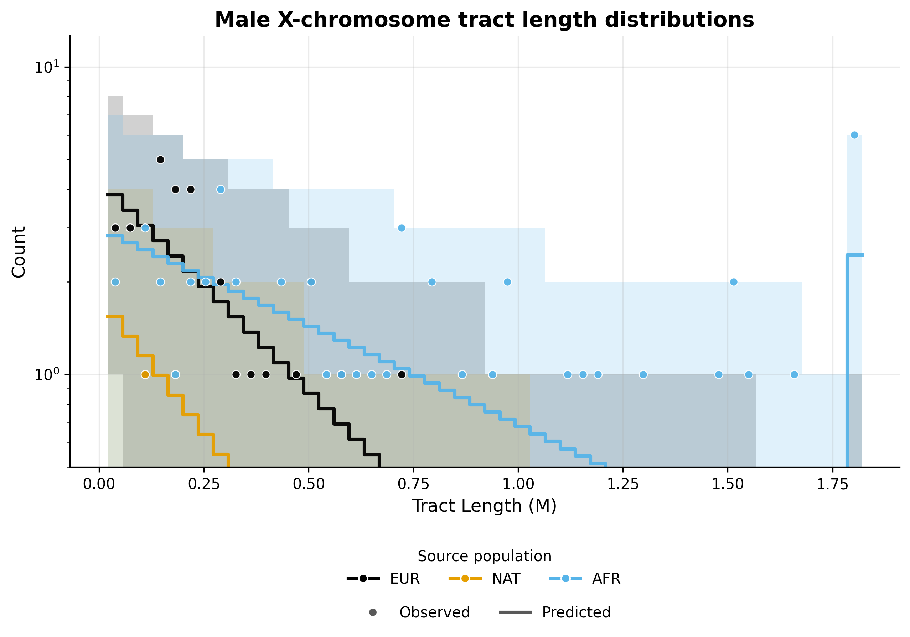

Note
Go to the end to download the full example code.
ASW inference - Two pulses model#
This example implements inference for the ASW population under a two pulses model of admixture, using the tracts package. Inference is performed using autosomal and X chromosome data, allowing for the specification of sex-biased admixture.
To implement this example, we use the following driver file:
samples:
directory: ./TrioPhased/
individual_names: [
"NA19625","NA19700","NA19701","NA19703","NA19704","NA19707","NA19711","NA19712","NA19713","NA19818","NA19819",
"NA19834","NA19835","NA19900","NA19901","NA19904","NA19908","NA19909","NA19913","NA19914","NA19916","NA19917",
"NA19920","NA19921","NA19922","NA19923","NA19982","NA19984","NA20126","NA20127","NA20274","NA20276","NA20278",
"NA20281","NA20282","NA20287","NA20289","NA20291","NA20294","NA20296","NA20298","NA20299","NA20314","NA20317",
"NA20318","NA20320","NA20321","NA20332","NA20334","NA20339","NA20340","NA20342","NA20346","NA20348","NA20351",
"NA20355","NA20356","NA20357","NA20359","NA20362","NA20412"]
male_names : [
"NA19700","NA19703","NA19711","NA19818","NA19834","NA19900","NA19904","NA19908","NA19916","NA19920",
"NA19922","NA19982","NA19984","NA20126","NA20278","NA20281","NA20291","NA20298","NA20318","NA20340",
"NA20342","NA20346","NA20348","NA20351","NA20356","NA20362"] #see Readme_dataprocessing.md for how this was generated
filename_format: "{name}_{label}_final.bed"
labels: [A, B] #If this field is omitted, 'A' and 'B' will be used by default
chromosomes: 1-22 #The chromosomes to use for analysis. Can be specified as a list or a range
allosomes: [X]
output_filename_format: "ASW_test_output_{label}"
log_filename: 'ASW_two_pulses.log'
output_directory: ./output_two_pulses/
verbose_log: 1
verbose_screen: 30
log_scale : True
start_params:
t1: 10
REUR: 0.1
t2: 5
REUR_sex_bias: 0.01
repetitions: 3
seed: 100
maximum_iterations: 1000
unknown_labels_for_smoothing: ["UNK", "centromere","miscall"] # segments with these labels will be smoother over, that is, will be filled with neighbouring ancestries up to their midpoints.
exclude_tracts_below_cm: 2
npts : 50
#fix_parameters_from_ancestry_proportions: ['REUR2', 'RNAT', 'REUR2_sex_bias', 'RNAT_sex_bias']
output_directory: ./output_two_pulses/
ad_model_autosomes: M
ad_model_allosomes: DC
Complete results from this analysis are saved in the output directory specified in the driver file. Below, we display the optimal parameters estimated from this analysis, as well as the plots illustrating the inferred tract length distributions, compared to the observed histograms, for every source population and chromosome type (autosomes and X chromosome).
Optimal parameters#
parameter |
value |
|---|---|
REUR |
0.08468951976755128 |
REUR_sex_bias |
0.9881914911542435 |
RNAT |
0.05704572251686853 |
RNAT_sex_bias |
0.9182265252081161 |
t1 |
6.576570450032844 |
REUR2 |
0.1639374874350898 |
REUR2_sex_bias |
-0.20240987983661396 |
t2 |
5.575936959004301 |
Tract length histograms#
Autosomal admixture#
{kind=link}

X chromosome admixture in females#
{kind=link}

X chromosome admixture in males#
{kind=link}

------------------------------------------------------------------------------------------------
Running tracts 2.0 with driver file: ASW_two_pulses.yaml
Reading data, demographic model and driver specifications...
------------------------------------------------------------------------------------------------
excluding_tracts_below set to 2.0 cM.
Ancestries: ['EUR', 'NAT', 'AFR']
Data autosome proportions: [0.19578862 0.03825495 0.76595643]
Data allosome proportions: [0.16839124 0.03818939 0.79341937]
Model parameters : ['REUR', 'REUR_sex_bias', 'RNAT', 'RNAT_sex_bias', 't1', 'REUR2', 'REUR2_sex_bias', 't2']
Multiple starting parameters were generated. These will be converted to optimizer units and used for multiple optimization runs.
Run | Starting parameters
---------------------------------------------------
1 | [0.1, 0.01, 0.1, 0.1, 13.89, 0.2, 0.1, 7.641]
2 | [0.1, 0.01, 0.1, 0.1, 12.52, 0.2, 0.1, 6.141]
3 | [0.1, 0.01, 0.1, 0.1, 13.99, 0.2, 0.1, 5.288]
---------------------------------------------------
Optimization run #1
-----------------------------------------------------------------------------------------
Admixture is modelled with the M model for autosomes and with the DC model for allosomes.
Optimization is performed in two steps.
Step 1 : Optimizing autosomal likelihood over parameters ['REUR', 'RNAT', 't1', 'REUR2', 't2'].
Iter. Log-likelihood Model parameters Transmission
-----------------------------------------------------------------------------------------
30 , -4538.44 , array([ 0.0953582 , 0 , 0.0944209 , 0 , 11.4738 , 0.196736 , 0 , 7.00516 ]), Autosomes
60 , -2341.91 , array([ 0.0904571 , 0 , 0.0871004 , 0 , 9.23133 , 0.188989 , 0 , 6.24366 ]), Autosomes
90 , -1227.09 , array([ 0.0878228 , 0 , 0.0793795 , 0 , 7.36465 , 0.182499 , 0 , 5.68516 ]), Autosomes
120 , -949.427 , array([ 0.0834851 , 0 , 0.0735855 , 0 , 6.61625 , 0.175779 , 0 , 5.61372 ]), Autosomes
Step 1 completed.
----------------------------------------------------------------------------------------------------------------------------
Step 2 : Optimizing autosomal + allosomal likelihood over parameters : ['REUR_sex_bias', 'RNAT_sex_bias', 'REUR2_sex_bias'].
Non-sex-bias parameters fixed at values from previous optimization step.
Iter. Log-likelihood Model parameters Transmission
----------------------------------------------------------------------------------------------------------------------------
150 , -209.172 , array([ 0.0836293 , 0.00889216 , 0.0735906 , 0.00502924 , 6.60329 , 0.175745 , -0.00921037 , 5.60263 ]), Female allosomes
150 , -101.918 , array([ 0.0836293 , 0.00889216 , 0.0735906 , 0.00502924 , 6.60329 , 0.175745 , -0.00921037 , 5.60263 ]), Male allosomes
150 , -948.464 , array([ 0.0836293 , 0.00889216 , 0.0735906 , 0.00502924 , 6.60329 , 0.175745 , -0.00921037 , 5.60263 ]), Autosomes
180 , -208.801 , array([ 0.0836293 , 0.122409 , 0.0735906 , -0.00045254 , 6.60329 , 0.175745 , -0.0819624 , 5.60263 ]), Female allosomes
180 , -101.896 , array([ 0.0836293 , 0.122409 , 0.0735906 , -0.00045254 , 6.60329 , 0.175745 , -0.0819624 , 5.60263 ]), Male allosomes
180 , -948.597 , array([ 0.0836293 , 0.122409 , 0.0735906 , -0.00045254 , 6.60329 , 0.175745 , -0.0819624 , 5.60263 ]), Autosomes
210 , -208.398 , array([ 0.0836293 , 0.264264 , 0.0735906 , -0.00947602 , 6.60329 , 0.175745 , -0.0879983 , 5.60263 ]), Female allosomes
210 , -102.085 , array([ 0.0836293 , 0.264264 , 0.0735906 , -0.00947602 , 6.60329 , 0.175745 , -0.0879983 , 5.60263 ]), Male allosomes
210 , -948.618 , array([ 0.0836293 , 0.264264 , 0.0735906 , -0.00947602 , 6.60329 , 0.175745 , -0.0879983 , 5.60263 ]), Autosomes
240 , -208.056 , array([ 0.0836293 , 0.393081 , 0.0735906 , -0.0242356 , 6.60329 , 0.175745 , -0.0965688 , 5.60263 ]), Female allosomes
240 , -102.233 , array([ 0.0836293 , 0.393081 , 0.0735906 , -0.0242356 , 6.60329 , 0.175745 , -0.0965688 , 5.60263 ]), Male allosomes
240 , -948.649 , array([ 0.0836293 , 0.393081 , 0.0735906 , -0.0242356 , 6.60329 , 0.175745 , -0.0965688 , 5.60263 ]), Autosomes
270 , -207.785 , array([ 0.0836293 , 0.508019 , 0.0735906 , -0.0461426 , 6.60329 , 0.175745 , -0.103234 , 5.60263 ]), Female allosomes
270 , -102.343 , array([ 0.0836293 , 0.508019 , 0.0735906 , -0.0461426 , 6.60329 , 0.175745 , -0.103234 , 5.60263 ]), Male allosomes
270 , -948.676 , array([ 0.0836293 , 0.508019 , 0.0735906 , -0.0461426 , 6.60329 , 0.175745 , -0.103234 , 5.60263 ]), Autosomes
300 , -207.572 , array([ 0.0836293 , 0.606187 , 0.0735906 , -0.0710081 , 6.60329 , 0.175745 , -0.111039 , 5.60263 ]), Female allosomes
300 , -102.415 , array([ 0.0836293 , 0.606187 , 0.0735906 , -0.0710081 , 6.60329 , 0.175745 , -0.111039 , 5.60263 ]), Male allosomes
300 , -948.709 , array([ 0.0836293 , 0.606187 , 0.0735906 , -0.0710081 , 6.60329 , 0.175745 , -0.111039 , 5.60263 ]), Autosomes
330 , -207.415 , array([ 0.0836293 , 0.68866 , 0.0735906 , -0.0971588 , 6.60329 , 0.175745 , -0.115879 , 5.60263 ]), Female allosomes
330 , -102.465 , array([ 0.0836293 , 0.68866 , 0.0735906 , -0.0971588 , 6.60329 , 0.175745 , -0.115879 , 5.60263 ]), Male allosomes
330 , -948.731 , array([ 0.0836293 , 0.68866 , 0.0735906 , -0.0971588 , 6.60329 , 0.175745 , -0.115879 , 5.60263 ]), Autosomes
360 , -207.286 , array([ 0.0836293 , 0.757871 , 0.0735906 , -0.119428 , 6.60329 , 0.175745 , -0.120097 , 5.60263 ]), Female allosomes
360 , -102.507 , array([ 0.0836293 , 0.757871 , 0.0735906 , -0.119428 , 6.60329 , 0.175745 , -0.120097 , 5.60263 ]), Male allosomes
360 , -948.751 , array([ 0.0836293 , 0.757871 , 0.0735906 , -0.119428 , 6.60329 , 0.175745 , -0.120097 , 5.60263 ]), Autosomes
390 , -207.192 , array([ 0.0836293 , 0.812752 , 0.0735906 , -0.137767 , 6.60329 , 0.175745 , -0.121712 , 5.60263 ]), Female allosomes
390 , -102.543 , array([ 0.0836293 , 0.812752 , 0.0735906 , -0.137767 , 6.60329 , 0.175745 , -0.121712 , 5.60263 ]), Male allosomes
390 , -948.759 , array([ 0.0836293 , 0.812752 , 0.0735906 , -0.137767 , 6.60329 , 0.175745 , -0.121712 , 5.60263 ]), Autosomes
420 , -207.103 , array([ 0.0836293 , 0.852845 , 0.0735906 , -0.146142 , 6.60329 , 0.175745 , -0.12523 , 5.60263 ]), Female allosomes
420 , -102.58 , array([ 0.0836293 , 0.852845 , 0.0735906 , -0.146142 , 6.60329 , 0.175745 , -0.12523 , 5.60263 ]), Male allosomes
420 , -948.777 , array([ 0.0836293 , 0.852845 , 0.0735906 , -0.146142 , 6.60329 , 0.175745 , -0.12523 , 5.60263 ]), Autosomes
450 , -207.062 , array([ 0.0836293 , 0.887528 , 0.0735906 , -0.164385 , 6.60329 , 0.175745 , -0.128078 , 5.60263 ]), Female allosomes
450 , -102.577 , array([ 0.0836293 , 0.887528 , 0.0735906 , -0.164385 , 6.60329 , 0.175745 , -0.128078 , 5.60263 ]), Male allosomes
450 , -948.791 , array([ 0.0836293 , 0.887528 , 0.0735906 , -0.164385 , 6.60329 , 0.175745 , -0.128078 , 5.60263 ]), Autosomes
480 , -207.013 , array([ 0.0836293 , 0.91252 , 0.0735906 , -0.168757 , 6.60329 , 0.175745 , -0.126095 , 5.60263 ]), Female allosomes
480 , -102.615 , array([ 0.0836293 , 0.91252 , 0.0735906 , -0.168757 , 6.60329 , 0.175745 , -0.126095 , 5.60263 ]), Male allosomes
480 , -948.781 , array([ 0.0836293 , 0.91252 , 0.0735906 , -0.168757 , 6.60329 , 0.175745 , -0.126095 , 5.60263 ]), Autosomes
510 , -206.977 , array([ 0.0836293 , 0.922216 , 0.0735906 , -0.166789 , 6.60329 , 0.175745 , -0.127968 , 5.60263 ]), Female allosomes
510 , -102.634 , array([ 0.0836293 , 0.922216 , 0.0735906 , -0.166789 , 6.60329 , 0.175745 , -0.127968 , 5.60263 ]), Male allosomes
510 , -948.791 , array([ 0.0836293 , 0.922216 , 0.0735906 , -0.166789 , 6.60329 , 0.175745 , -0.127968 , 5.60263 ]), Autosomes
540 , -206.969 , array([ 0.0836293 , 0.930955 , 0.0735906 , -0.172651 , 6.60329 , 0.175745 , -0.129474 , 5.60263 ]), Female allosomes
540 , -102.627 , array([ 0.0836293 , 0.930955 , 0.0735906 , -0.172651 , 6.60329 , 0.175745 , -0.129474 , 5.60263 ]), Male allosomes
540 , -948.798 , array([ 0.0836293 , 0.930955 , 0.0735906 , -0.172651 , 6.60329 , 0.175745 , -0.129474 , 5.60263 ]), Autosomes
570 , -206.951 , array([ 0.0836293 , 0.939968 , 0.0735906 , -0.174364 , 6.60329 , 0.175745 , -0.129472 , 5.60263 ]), Female allosomes
570 , -102.638 , array([ 0.0836293 , 0.939968 , 0.0735906 , -0.174364 , 6.60329 , 0.175745 , -0.129472 , 5.60263 ]), Male allosomes
570 , -948.798 , array([ 0.0836293 , 0.939968 , 0.0735906 , -0.174364 , 6.60329 , 0.175745 , -0.129472 , 5.60263 ]), Autosomes
600 , -206.932 , array([ 0.0836293 , 0.947698 , 0.0735906 , -0.175616 , 6.60329 , 0.175745 , -0.13033 , 5.60263 ]), Female allosomes
600 , -102.646 , array([ 0.0836293 , 0.947698 , 0.0735906 , -0.175616 , 6.60329 , 0.175745 , -0.13033 , 5.60263 ]), Male allosomes
600 , -948.803 , array([ 0.0836293 , 0.947698 , 0.0735906 , -0.175616 , 6.60329 , 0.175745 , -0.13033 , 5.60263 ]), Autosomes
630 , -206.92 , array([ 0.0836293 , 0.953898 , 0.0735906 , -0.175276 , 6.60329 , 0.175745 , -0.128182 , 5.60263 ]), Female allosomes
630 , -102.665 , array([ 0.0836293 , 0.953898 , 0.0735906 , -0.175276 , 6.60329 , 0.175745 , -0.128182 , 5.60263 ]), Male allosomes
630 , -948.792 , array([ 0.0836293 , 0.953898 , 0.0735906 , -0.175276 , 6.60329 , 0.175745 , -0.128182 , 5.60263 ]), Autosomes
660 , -206.915 , array([ 0.0836293 , 0.956591 , 0.0735906 , -0.177643 , 6.60329 , 0.175745 , -0.130624 , 5.60263 ]), Female allosomes
660 , -102.655 , array([ 0.0836293 , 0.956591 , 0.0735906 , -0.177643 , 6.60329 , 0.175745 , -0.130624 , 5.60263 ]), Male allosomes
660 , -948.804 , array([ 0.0836293 , 0.956591 , 0.0735906 , -0.177643 , 6.60329 , 0.175745 , -0.130624 , 5.60263 ]), Autosomes
690 , -206.908 , array([ 0.0836293 , 0.959566 , 0.0735906 , -0.178605 , 6.60329 , 0.175745 , -0.131397 , 5.60263 ]), Female allosomes
690 , -102.655 , array([ 0.0836293 , 0.959566 , 0.0735906 , -0.178605 , 6.60329 , 0.175745 , -0.131397 , 5.60263 ]), Male allosomes
690 , -948.808 , array([ 0.0836293 , 0.959566 , 0.0735906 , -0.178605 , 6.60329 , 0.175745 , -0.131397 , 5.60263 ]), Autosomes
720 , -206.907 , array([ 0.0836293 , 0.962371 , 0.0735906 , -0.18018 , 6.60329 , 0.175745 , -0.130752 , 5.60263 ]), Female allosomes
720 , -102.658 , array([ 0.0836293 , 0.962371 , 0.0735906 , -0.18018 , 6.60329 , 0.175745 , -0.130752 , 5.60263 ]), Male allosomes
720 , -948.805 , array([ 0.0836293 , 0.962371 , 0.0735906 , -0.18018 , 6.60329 , 0.175745 , -0.130752 , 5.60263 ]), Autosomes
750 , -206.9 , array([ 0.0836293 , 0.964736 , 0.0735906 , -0.180218 , 6.60329 , 0.175745 , -0.131491 , 5.60263 ]), Female allosomes
750 , -102.66 , array([ 0.0836293 , 0.964736 , 0.0735906 , -0.180218 , 6.60329 , 0.175745 , -0.131491 , 5.60263 ]), Male allosomes
750 , -948.809 , array([ 0.0836293 , 0.964736 , 0.0735906 , -0.180218 , 6.60329 , 0.175745 , -0.131491 , 5.60263 ]), Autosomes
780 , -206.893 , array([ 0.0836293 , 0.967162 , 0.0735906 , -0.180606 , 6.60329 , 0.175745 , -0.132309 , 5.60263 ]), Female allosomes
780 , -102.661 , array([ 0.0836293 , 0.967162 , 0.0735906 , -0.180606 , 6.60329 , 0.175745 , -0.132309 , 5.60263 ]), Male allosomes
780 , -948.813 , array([ 0.0836293 , 0.967162 , 0.0735906 , -0.180606 , 6.60329 , 0.175745 , -0.132309 , 5.60263 ]), Autosomes
810 , -206.886 , array([ 0.0836293 , 0.969232 , 0.0735906 , -0.179942 , 6.60329 , 0.175745 , -0.132065 , 5.60263 ]), Female allosomes
810 , -102.667 , array([ 0.0836293 , 0.969232 , 0.0735906 , -0.179942 , 6.60329 , 0.175745 , -0.132065 , 5.60263 ]), Male allosomes
810 , -948.812 , array([ 0.0836293 , 0.969232 , 0.0735906 , -0.179942 , 6.60329 , 0.175745 , -0.132065 , 5.60263 ]), Autosomes
840 , -206.886 , array([ 0.0836293 , 0.971135 , 0.0735906 , -0.181802 , 6.60329 , 0.175745 , -0.132432 , 5.60263 ]), Female allosomes
840 , -102.664 , array([ 0.0836293 , 0.971135 , 0.0735906 , -0.181802 , 6.60329 , 0.175745 , -0.132432 , 5.60263 ]), Male allosomes
840 , -948.814 , array([ 0.0836293 , 0.971135 , 0.0735906 , -0.181802 , 6.60329 , 0.175745 , -0.132432 , 5.60263 ]), Autosomes
870 , -206.877 , array([ 0.0836293 , 0.973018 , 0.0735906 , -0.180914 , 6.60329 , 0.175745 , -0.132599 , 5.60263 ]), Female allosomes
870 , -102.67 , array([ 0.0836293 , 0.973018 , 0.0735906 , -0.180914 , 6.60329 , 0.175745 , -0.132599 , 5.60263 ]), Male allosomes
870 , -948.815 , array([ 0.0836293 , 0.973018 , 0.0735906 , -0.180914 , 6.60329 , 0.175745 , -0.132599 , 5.60263 ]), Autosomes
900 , -206.886 , array([ 0.0836293 , 0.974598 , 0.0735906 , -0.183984 , 6.60329 , 0.175745 , -0.13134 , 5.60263 ]), Female allosomes
900 , -102.667 , array([ 0.0836293 , 0.974598 , 0.0735906 , -0.183984 , 6.60329 , 0.175745 , -0.13134 , 5.60263 ]), Male allosomes
900 , -948.808 , array([ 0.0836293 , 0.974598 , 0.0735906 , -0.183984 , 6.60329 , 0.175745 , -0.13134 , 5.60263 ]), Autosomes
930 , -206.877 , array([ 0.0836293 , 0.976011 , 0.0735906 , -0.182376 , 6.60329 , 0.175745 , -0.131481 , 5.60263 ]), Female allosomes
930 , -102.674 , array([ 0.0836293 , 0.976011 , 0.0735906 , -0.182376 , 6.60329 , 0.175745 , -0.131481 , 5.60263 ]), Male allosomes
930 , -948.809 , array([ 0.0836293 , 0.976011 , 0.0735906 , -0.182376 , 6.60329 , 0.175745 , -0.131481 , 5.60263 ]), Autosomes
960 , -206.878 , array([ 0.0836293 , 0.976948 , 0.0735906 , -0.184157 , 6.60329 , 0.175745 , -0.132346 , 5.60263 ]), Female allosomes
960 , -102.667 , array([ 0.0836293 , 0.976948 , 0.0735906 , -0.184157 , 6.60329 , 0.175745 , -0.132346 , 5.60263 ]), Male allosomes
960 , -948.813 , array([ 0.0836293 , 0.976948 , 0.0735906 , -0.184157 , 6.60329 , 0.175745 , -0.132346 , 5.60263 ]), Autosomes
990 , -206.873 , array([ 0.0836293 , 0.977772 , 0.0735906 , -0.183305 , 6.60329 , 0.175745 , -0.132297 , 5.60263 ]), Female allosomes
990 , -102.672 , array([ 0.0836293 , 0.977772 , 0.0735906 , -0.183305 , 6.60329 , 0.175745 , -0.132297 , 5.60263 ]), Male allosomes
990 , -948.813 , array([ 0.0836293 , 0.977772 , 0.0735906 , -0.183305 , 6.60329 , 0.175745 , -0.132297 , 5.60263 ]), Autosomes
1020 , -206.873 , array([ 0.0836293 , 0.978575 , 0.0735906 , -0.18389 , 6.60329 , 0.175745 , -0.132344 , 5.60263 ]), Female allosomes
1020 , -102.671 , array([ 0.0836293 , 0.978575 , 0.0735906 , -0.18389 , 6.60329 , 0.175745 , -0.132344 , 5.60263 ]), Male allosomes
1020 , -948.813 , array([ 0.0836293 , 0.978575 , 0.0735906 , -0.18389 , 6.60329 , 0.175745 , -0.132344 , 5.60263 ]), Autosomes
1050 , -206.871 , array([ 0.0836293 , 0.97925 , 0.0735906 , -0.183976 , 6.60329 , 0.175745 , -0.132513 , 5.60263 ]), Female allosomes
1050 , -102.672 , array([ 0.0836293 , 0.97925 , 0.0735906 , -0.183976 , 6.60329 , 0.175745 , -0.132513 , 5.60263 ]), Male allosomes
1050 , -948.814 , array([ 0.0836293 , 0.97925 , 0.0735906 , -0.183976 , 6.60329 , 0.175745 , -0.132513 , 5.60263 ]), Autosomes
1080 , -206.869 , array([ 0.0836293 , 0.979892 , 0.0735906 , -0.18401 , 6.60329 , 0.175745 , -0.132866 , 5.60263 ]), Female allosomes
1080 , -102.672 , array([ 0.0836293 , 0.979892 , 0.0735906 , -0.18401 , 6.60329 , 0.175745 , -0.132866 , 5.60263 ]), Male allosomes
1080 , -948.816 , array([ 0.0836293 , 0.979892 , 0.0735906 , -0.18401 , 6.60329 , 0.175745 , -0.132866 , 5.60263 ]), Autosomes
1110 , -206.865 , array([ 0.0836293 , 0.980437 , 0.0735906 , -0.183067 , 6.60329 , 0.175745 , -0.132607 , 5.60263 ]), Female allosomes
1110 , -102.677 , array([ 0.0836293 , 0.980437 , 0.0735906 , -0.183067 , 6.60329 , 0.175745 , -0.132607 , 5.60263 ]), Male allosomes
1110 , -948.815 , array([ 0.0836293 , 0.980437 , 0.0735906 , -0.183067 , 6.60329 , 0.175745 , -0.132607 , 5.60263 ]), Autosomes
1140 , -206.865 , array([ 0.0836293 , 0.980947 , 0.0735906 , -0.183683 , 6.60329 , 0.175745 , -0.132873 , 5.60263 ]), Female allosomes
1140 , -102.675 , array([ 0.0836293 , 0.980947 , 0.0735906 , -0.183683 , 6.60329 , 0.175745 , -0.132873 , 5.60263 ]), Male allosomes
1140 , -948.816 , array([ 0.0836293 , 0.980947 , 0.0735906 , -0.183683 , 6.60329 , 0.175745 , -0.132873 , 5.60263 ]), Autosomes
Step 2 completed.
----------------------------------------------------------------------------------------------------------------------------
Optimization run #2
-----------------------------------------------------------------------------------------
Admixture is modelled with the M model for autosomes and with the DC model for allosomes.
Optimization is performed in two steps.
Step 1 : Optimizing autosomal likelihood over parameters ['REUR', 'RNAT', 't1', 'REUR2', 't2'].
Iter. Log-likelihood Model parameters Transmission
-----------------------------------------------------------------------------------------
30 , -3076.31 , array([ 0.0948264 , 0 , 0.0930836 , 0 , 10.392 , 0.19423 , 0 , 5.70553 ]), Autosomes
60 , -1587.74 , array([ 0.089653 , 0 , 0.0855664 , 0 , 8.26067 , 0.188404 , 0 , 5.20647 ]), Autosomes
90 , -1024.42 , array([ 0.0857413 , 0 , 0.0741787 , 0 , 6.78731 , 0.17934 , 0 , 5.12973 ]), Autosomes
120 , -919.197 , array([ 0.0848331 , 0 , 0.0702176 , 0 , 6.36681 , 0.176561 , 0 , 5.36338 ]), Autosomes
150 , 4.15817e+27 , array([ 0.084797 , 0 , 0.0701599 , 0 , 6.36627 , 0.176477 , 0 , 5.36631 ]), OOB (oob=-4.1581650789268565e-05)
Step 1 completed.
----------------------------------------------------------------------------------------------------------------------------
Step 2 : Optimizing autosomal + allosomal likelihood over parameters : ['REUR_sex_bias', 'RNAT_sex_bias', 'REUR2_sex_bias'].
Non-sex-bias parameters fixed at values from previous optimization step.
Iter. Log-likelihood Model parameters Transmission
----------------------------------------------------------------------------------------------------------------------------
Step 2 completed.
----------------------------------------------------------------------------------------------------------------------------
Optimization run #3
-----------------------------------------------------------------------------------------
Admixture is modelled with the M model for autosomes and with the DC model for allosomes.
Optimization is performed in two steps.
Step 1 : Optimizing autosomal likelihood over parameters ['REUR', 'RNAT', 't1', 'REUR2', 't2'].
Iter. Log-likelihood Model parameters Transmission
-----------------------------------------------------------------------------------------
30 , -3694.51 , array([ 0.0943971 , 0 , 0.0919076 , 0 , 11.9332 , 0.197646 , 0 , 4.97037 ]), Autosomes
60 , -1895 , array([ 0.0898342 , 0 , 0.0830427 , 0 , 9.41982 , 0.193181 , 0 , 4.7267 ]), Autosomes
90 , -1207.18 , array([ 0.08665 , 0 , 0.0747253 , 0 , 7.80178 , 0.18735 , 0 , 4.51408 ]), Autosomes
120 , -973.891 , array([ 0.0856579 , 0 , 0.0655613 , 0 , 6.99577 , 0.176278 , 0 , 4.78787 ]), Autosomes
150 , -882.714 , array([ 0.0853844 , 0 , 0.0617342 , 0 , 6.79096 , 0.169927 , 0 , 5.13186 ]), Autosomes
180 , -783.752 , array([ 0.0849452 , 0 , 0.0573191 , 0 , 6.55847 , 0.164013 , 0 , 5.55773 ]), Autosomes
210 , -780.22 , array([ 0.0846849 , 0 , 0.0570419 , 0 , 6.57659 , 0.163945 , 0 , 5.57606 ]), Autosomes
Step 1 completed.
----------------------------------------------------------------------------------------------------------------------------
Step 2 : Optimizing autosomal + allosomal likelihood over parameters : ['REUR_sex_bias', 'RNAT_sex_bias', 'REUR2_sex_bias'].
Non-sex-bias parameters fixed at values from previous optimization step.
Iter. Log-likelihood Model parameters Transmission
----------------------------------------------------------------------------------------------------------------------------
240 , -214.303 , array([ 0.0846895 , 0.0707172 , 0.0570457 , 0.0705609 , 6.57657 , 0.163937 , -0.032293 , 5.57594 ]), Female allosomes
240 , -99.3913 , array([ 0.0846895 , 0.0707172 , 0.0570457 , 0.0705609 , 6.57657 , 0.163937 , -0.032293 , 5.57594 ]), Male allosomes
240 , -780.261 , array([ 0.0846895 , 0.0707172 , 0.0570457 , 0.0705609 , 6.57657 , 0.163937 , -0.032293 , 5.57594 ]), Autosomes
270 , -213.412 , array([ 0.0846895 , 0.175729 , 0.0570457 , 0.167023 , 6.57657 , 0.163937 , -0.0601379 , 5.57594 ]), Female allosomes
270 , -99.6837 , array([ 0.0846895 , 0.175729 , 0.0570457 , 0.167023 , 6.57657 , 0.163937 , -0.0601379 , 5.57594 ]), Male allosomes
270 , -780.285 , array([ 0.0846895 , 0.175729 , 0.0570457 , 0.167023 , 6.57657 , 0.163937 , -0.0601379 , 5.57594 ]), Autosomes
300 , -212.563 , array([ 0.0846895 , 0.28478 , 0.0570457 , 0.255654 , 6.57657 , 0.163937 , -0.0766907 , 5.57594 ]), Female allosomes
300 , -99.9996 , array([ 0.0846895 , 0.28478 , 0.0570457 , 0.255654 , 6.57657 , 0.163937 , -0.0766907 , 5.57594 ]), Male allosomes
300 , -780.307 , array([ 0.0846895 , 0.28478 , 0.0570457 , 0.255654 , 6.57657 , 0.163937 , -0.0766907 , 5.57594 ]), Autosomes
330 , -211.792 , array([ 0.0846895 , 0.386504 , 0.0570457 , 0.340195 , 6.57657 , 0.163937 , -0.0940155 , 5.57594 ]), Female allosomes
330 , -100.301 , array([ 0.0846895 , 0.386504 , 0.0570457 , 0.340195 , 6.57657 , 0.163937 , -0.0940155 , 5.57594 ]), Male allosomes
330 , -780.335 , array([ 0.0846895 , 0.386504 , 0.0570457 , 0.340195 , 6.57657 , 0.163937 , -0.0940155 , 5.57594 ]), Autosomes
360 , -211.112 , array([ 0.0846895 , 0.483655 , 0.0570457 , 0.412521 , 6.57657 , 0.163937 , -0.107498 , 5.57594 ]), Female allosomes
360 , -100.585 , array([ 0.0846895 , 0.483655 , 0.0570457 , 0.412521 , 6.57657 , 0.163937 , -0.107498 , 5.57594 ]), Male allosomes
360 , -780.36 , array([ 0.0846895 , 0.483655 , 0.0570457 , 0.412521 , 6.57657 , 0.163937 , -0.107498 , 5.57594 ]), Autosomes
390 , -210.528 , array([ 0.0846895 , 0.572495 , 0.0570457 , 0.473771 , 6.57657 , 0.163937 , -0.125475 , 5.57594 ]), Female allosomes
390 , -100.823 , array([ 0.0846895 , 0.572495 , 0.0570457 , 0.473771 , 6.57657 , 0.163937 , -0.125475 , 5.57594 ]), Male allosomes
390 , -780.4 , array([ 0.0846895 , 0.572495 , 0.0570457 , 0.473771 , 6.57657 , 0.163937 , -0.125475 , 5.57594 ]), Autosomes
420 , -210.006 , array([ 0.0846895 , 0.648387 , 0.0570457 , 0.535519 , 6.57657 , 0.163937 , -0.139369 , 5.57594 ]), Female allosomes
420 , -101.056 , array([ 0.0846895 , 0.648387 , 0.0570457 , 0.535519 , 6.57657 , 0.163937 , -0.139369 , 5.57594 ]), Male allosomes
420 , -780.435 , array([ 0.0846895 , 0.648387 , 0.0570457 , 0.535519 , 6.57657 , 0.163937 , -0.139369 , 5.57594 ]), Autosomes
450 , -209.573 , array([ 0.0846895 , 0.715157 , 0.0570457 , 0.585008 , 6.57657 , 0.163937 , -0.157388 , 5.57594 ]), Female allosomes
450 , -101.236 , array([ 0.0846895 , 0.715157 , 0.0570457 , 0.585008 , 6.57657 , 0.163937 , -0.157388 , 5.57594 ]), Male allosomes
450 , -780.486 , array([ 0.0846895 , 0.715157 , 0.0570457 , 0.585008 , 6.57657 , 0.163937 , -0.157388 , 5.57594 ]), Autosomes
480 , -209.205 , array([ 0.0846895 , 0.769041 , 0.0570457 , 0.633083 , 6.57657 , 0.163937 , -0.160142 , 5.57594 ]), Female allosomes
480 , -101.437 , array([ 0.0846895 , 0.769041 , 0.0570457 , 0.633083 , 6.57657 , 0.163937 , -0.160142 , 5.57594 ]), Male allosomes
480 , -780.494 , array([ 0.0846895 , 0.769041 , 0.0570457 , 0.633083 , 6.57657 , 0.163937 , -0.160142 , 5.57594 ]), Autosomes
510 , -208.889 , array([ 0.0846895 , 0.814919 , 0.0570457 , 0.676882 , 6.57657 , 0.163937 , -0.164882 , 5.57594 ]), Female allosomes
510 , -101.61 , array([ 0.0846895 , 0.814919 , 0.0570457 , 0.676882 , 6.57657 , 0.163937 , -0.164882 , 5.57594 ]), Male allosomes
510 , -780.509 , array([ 0.0846895 , 0.814919 , 0.0570457 , 0.676882 , 6.57657 , 0.163937 , -0.164882 , 5.57594 ]), Autosomes
540 , -208.623 , array([ 0.0846895 , 0.852881 , 0.0570457 , 0.714605 , 6.57657 , 0.163937 , -0.177911 , 5.57594 ]), Female allosomes
540 , -101.731 , array([ 0.0846895 , 0.852881 , 0.0570457 , 0.714605 , 6.57657 , 0.163937 , -0.177911 , 5.57594 ]), Male allosomes
540 , -780.552 , array([ 0.0846895 , 0.852881 , 0.0570457 , 0.714605 , 6.57657 , 0.163937 , -0.177911 , 5.57594 ]), Autosomes
570 , -208.405 , array([ 0.0846895 , 0.884278 , 0.0570457 , 0.747366 , 6.57657 , 0.163937 , -0.181784 , 5.57594 ]), Female allosomes
570 , -101.856 , array([ 0.0846895 , 0.884278 , 0.0570457 , 0.747366 , 6.57657 , 0.163937 , -0.181784 , 5.57594 ]), Male allosomes
570 , -780.565 , array([ 0.0846895 , 0.884278 , 0.0570457 , 0.747366 , 6.57657 , 0.163937 , -0.181784 , 5.57594 ]), Autosomes
600 , -208.216 , array([ 0.0846895 , 0.909245 , 0.0570457 , 0.778928 , 6.57657 , 0.163937 , -0.187074 , 5.57594 ]), Female allosomes
600 , -101.964 , array([ 0.0846895 , 0.909245 , 0.0570457 , 0.778928 , 6.57657 , 0.163937 , -0.187074 , 5.57594 ]), Male allosomes
600 , -780.584 , array([ 0.0846895 , 0.909245 , 0.0570457 , 0.778928 , 6.57657 , 0.163937 , -0.187074 , 5.57594 ]), Autosomes
630 , -208.067 , array([ 0.0846895 , 0.929162 , 0.0570457 , 0.804401 , 6.57657 , 0.163937 , -0.190229 , 5.57594 ]), Female allosomes
630 , -102.054 , array([ 0.0846895 , 0.929162 , 0.0570457 , 0.804401 , 6.57657 , 0.163937 , -0.190229 , 5.57594 ]), Male allosomes
630 , -780.595 , array([ 0.0846895 , 0.929162 , 0.0570457 , 0.804401 , 6.57657 , 0.163937 , -0.190229 , 5.57594 ]), Autosomes
660 , -207.939 , array([ 0.0846895 , 0.944604 , 0.0570457 , 0.829119 , 6.57657 , 0.163937 , -0.191877 , 5.57594 ]), Female allosomes
660 , -102.139 , array([ 0.0846895 , 0.944604 , 0.0570457 , 0.829119 , 6.57657 , 0.163937 , -0.191877 , 5.57594 ]), Male allosomes
660 , -780.601 , array([ 0.0846895 , 0.944604 , 0.0570457 , 0.829119 , 6.57657 , 0.163937 , -0.191877 , 5.57594 ]), Autosomes
690 , -207.837 , array([ 0.0846895 , 0.956634 , 0.0570457 , 0.849882 , 6.57657 , 0.163937 , -0.191326 , 5.57594 ]), Female allosomes
690 , -102.215 , array([ 0.0846895 , 0.956634 , 0.0570457 , 0.849882 , 6.57657 , 0.163937 , -0.191326 , 5.57594 ]), Male allosomes
690 , -780.599 , array([ 0.0846895 , 0.956634 , 0.0570457 , 0.849882 , 6.57657 , 0.163937 , -0.191326 , 5.57594 ]), Autosomes
720 , -207.765 , array([ 0.0846895 , 0.964487 , 0.0570457 , 0.863896 , 6.57657 , 0.163937 , -0.197405 , 5.57594 ]), Female allosomes
720 , -102.246 , array([ 0.0846895 , 0.964487 , 0.0570457 , 0.863896 , 6.57657 , 0.163937 , -0.197405 , 5.57594 ]), Male allosomes
720 , -780.622 , array([ 0.0846895 , 0.964487 , 0.0570457 , 0.863896 , 6.57657 , 0.163937 , -0.197405 , 5.57594 ]), Autosomes
750 , -207.692 , array([ 0.0846895 , 0.972429 , 0.0570457 , 0.879454 , 6.57657 , 0.163937 , -0.200294 , 5.57594 ]), Female allosomes
750 , -102.292 , array([ 0.0846895 , 0.972429 , 0.0570457 , 0.879454 , 6.57657 , 0.163937 , -0.200294 , 5.57594 ]), Male allosomes
750 , -780.633 , array([ 0.0846895 , 0.972429 , 0.0570457 , 0.879454 , 6.57657 , 0.163937 , -0.200294 , 5.57594 ]), Autosomes
780 , -207.636 , array([ 0.0846895 , 0.978218 , 0.0570457 , 0.89222 , 6.57657 , 0.163937 , -0.199919 , 5.57594 ]), Female allosomes
780 , -102.336 , array([ 0.0846895 , 0.978218 , 0.0570457 , 0.89222 , 6.57657 , 0.163937 , -0.199919 , 5.57594 ]), Male allosomes
780 , -780.632 , array([ 0.0846895 , 0.978218 , 0.0570457 , 0.89222 , 6.57657 , 0.163937 , -0.199919 , 5.57594 ]), Autosomes
810 , -207.59 , array([ 0.0846895 , 0.982325 , 0.0570457 , 0.90386 , 6.57657 , 0.163937 , -0.200642 , 5.57594 ]), Female allosomes
810 , -102.371 , array([ 0.0846895 , 0.982325 , 0.0570457 , 0.90386 , 6.57657 , 0.163937 , -0.200642 , 5.57594 ]), Male allosomes
810 , -780.634 , array([ 0.0846895 , 0.982325 , 0.0570457 , 0.90386 , 6.57657 , 0.163937 , -0.200642 , 5.57594 ]), Autosomes
840 , -207.572 , array([ 0.0846895 , 0.984269 , 0.0570457 , 0.908225 , 6.57657 , 0.163937 , -0.19995 , 5.57594 ]), Female allosomes
840 , -102.387 , array([ 0.0846895 , 0.984269 , 0.0570457 , 0.908225 , 6.57657 , 0.163937 , -0.19995 , 5.57594 ]), Male allosomes
840 , -780.632 , array([ 0.0846895 , 0.984269 , 0.0570457 , 0.908225 , 6.57657 , 0.163937 , -0.19995 , 5.57594 ]), Autosomes
870 , -207.553 , array([ 0.0846895 , 0.986088 , 0.0570457 , 0.911986 , 6.57657 , 0.163937 , -0.202329 , 5.57594 ]), Female allosomes
870 , -102.393 , array([ 0.0846895 , 0.986088 , 0.0570457 , 0.911986 , 6.57657 , 0.163937 , -0.202329 , 5.57594 ]), Male allosomes
870 , -780.641 , array([ 0.0846895 , 0.986088 , 0.0570457 , 0.911986 , 6.57657 , 0.163937 , -0.202329 , 5.57594 ]), Autosomes
900 , -207.536 , array([ 0.0846895 , 0.98758 , 0.0570457 , 0.916188 , 6.57657 , 0.163937 , -0.202501 , 5.57594 ]), Female allosomes
900 , -102.406 , array([ 0.0846895 , 0.98758 , 0.0570457 , 0.916188 , 6.57657 , 0.163937 , -0.202501 , 5.57594 ]), Male allosomes
900 , -780.642 , array([ 0.0846895 , 0.98758 , 0.0570457 , 0.916188 , 6.57657 , 0.163937 , -0.202501 , 5.57594 ]), Autosomes
930 , -207.596 , array([ 0.0846895 , 0.988194 , 0.0570457 , 0.918215 , 6.57657 , 0.163937 , -0.202376 , 5.57594 ]), Female allosomes
930 , -102.399 , array([ 0.0846895 , 0.988194 , 0.0570457 , 0.918215 , 6.57657 , 0.163937 , -0.202376 , 5.57594 ]), Male allosomes
930 , -780.641 , array([ 0.0846895 , 0.988194 , 0.0570457 , 0.918215 , 6.57657 , 0.163937 , -0.202376 , 5.57594 ]), Autosomes
Step 2 completed.
----------------------------------------------------------------------------------------------------------------------------
---------------------------------------------------------------------------
Results from multiple optimization runs with different starting parameters:
-------------------------------------
Run | LogLik | Found parameters
-------------------------------------
1 | -1258.36 | [0.08363, 0.981, 0.07359, -0.1838, 6.603, 0.1757, -0.1324, 5.603]
2 | -4.15817e+27 | [0.0848, 0, 0.07016, 0, 6.366, 0.1765, 0, 5.366]
3 | -1090.58 | [0.08469, 0.9882, 0.05705, 0.9182, 6.577, 0.1639, -0.2024, 5.576]
-------------------------------------
Final parameters and corresponding likelihood:
--------------------------------------------------------------------------------------------------------------------------
LogLik | REUR REUR_sex_bias RNAT RNAT_sex_bias t1 REUR2 REUR2_sex_bias t2
--------------------------------------------------------------------------------------------------------------------------
-1090.58 | 0.08469 0.9882 0.05705 0.9182 6.577 0.1639 -0.2024 5.576
--------------------------------------------------------------------------------------------------------------------------
Results saved to : ./output_two_pulses/
{'destination_dir': PosixPath('/home/runner/work/tracts/tracts/docs/source/auto_examples/ASW/output_two_pulses'), 'table_file': PosixPath('/home/runner/work/tracts/tracts/docs/source/auto_examples/ASW/output_two_pulses/ASW_test_output_optimal_parameters.txt')}
import sys
from pathlib import Path
sys.path.append('.')
from tracts.driver import run_tracts
script_path = Path(sys.argv[0]).resolve()
driver_filename = "ASW_two_pulses.yaml"
run_tracts(driver_filename = driver_filename, script_dir = script_path)
# Don't run the code below: for documentation purposes only.
from tracts.doc_utils import prepare_example_outputs_for_docs
prepare_example_outputs_for_docs("output_two_pulses")
Total running time of the script: (16 minutes 57.255 seconds)